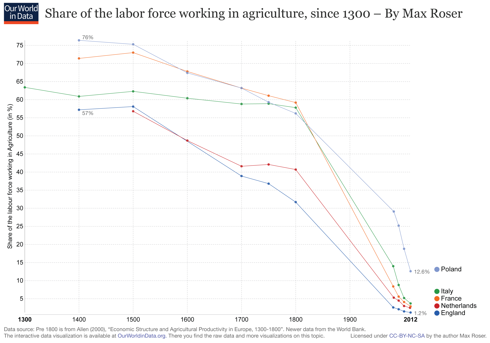

Pozdravlyayu Comrade! Now that you have successfully seized the means of Education from the hands of the Capitalists you are now ready to seize the means of Production!
While the capitalists of the 1800s pillaged the proleteriat by forcing them to work in the fields to acquire natural resources for the bourgeoisie, things are different today. Clearly the problem was that there were not enough agricultural workers. The great Pol Pot made every effort to unite the masses into a glorious commune where agricultural workers could have reached 100% of the population. Sadly, this number is lower today than ever before.
Fear not comrade! By increasing the efficiency and decreasing the cost of farming the Capitalists have foolishly opened the door to new markets and these new markets are ripe for disruption and revolution! Because the fat and lazy capitalists have reduced the cost of food to almost nothing they no longer need to worry about where their next meal comes from! Ha, Communists would never make that mistake! With this free time Capitalists have decided to pursue inauspicious activities like greedily trading for things that they want.
I know like me, your communist heart must cringe and quiver at the mention of private property, but comrade, please listen on because here in lies their folly! With this freedom and sickening surplus of goods comes an overwhelming need for new services. It turns out that Capitalists will actually pay for services that improve their lives in a number of ways.
The bourgeoisie of today are making Billions of dollars selling bits and bytes to peasants. Comrade, wait! I know your revolutionary fervor must be welling up inside your breast when your hear me speak of the plight of these peasants, but please hear me out. I was recently shocked to discover that these bits and bytes that are being sold to peasants were not mined from the earth nor grown from seeds tended by the noble peasants. These bits and bytes that make the bourgeoisie rich can be harvested from any computer in the world. That means if you are reading these words you have successfully seized the means of production that were used to create such massive fountains of wealth as Netflix, Twitter, Facebook, Salesforce, Google and more!
Believe it or not, the capitalist dogs that have built this sickening wealth and prosperity have also made the same tools they used to aqcuire their wealth available to the masses! The first step to building your product is to seize the tools you need to build it. The hammer and sickle were a great choice for communist revolution 200 years ago, but it's time for new tools to lead a modern revolution today.
Seize the Tools!
| Website | Cost | Use |
|---|---|---|
| developer.apple.com/xcode/ | Free | Billions of dollars have been made by the bourgeoisie on the Apple AppStore. |
| developer.android.com/studio | Free | Billions of dollars have been made by the bourgeoisie on the Google Play Store. |
| unity.com | Free | Break into the Trillion dollar Gaming and Movie Industries using Unity |
| unrealengine.com | Free | Break into the Trillion dollar Gaming and Movie Industries using Unreal Engine |
| code.visualstudio.com | Free | Visual Studio Code is arguably the most communist web development tool because I, Lemmy C. Yatitz, have successfully decolonized it by using VS Code to development this revolutionary communist propaganda. |
Now that you have the tools to develop a product to support your commune the next step is to find a way to distribute your product to the peasant masses.
Seize the Distribution Platform!
| Website | Cost | Use |
|---|---|---|
| developer.apple.com/distribute | $99 /year | Sell your product to hundreds of millions of people |
| developer.android.com/distribute | 25$ One Time Fee | Distribute your app to customers across 2 Billion Android Devices |
| aws.amazon.com | Up to $100,000 in free credits for startups | Deploy your application to any user with a web connected device around the world |
| heroku.com | Start Free | Deploy your application to any user with a web connected device around the world |
Congratulations Comrade, you have seized the means of production! Now your revolutionary disposition and communist philosophy will surely make your product superior to that of the bourgeoisie and your product will quickly surpass that of the colonizers. Remember, unlike the Kulaks who came before you, you must not succumb to the siren song of the bourgeoisie and you must distribute every penny earned directly back to the peasantry... or else.
Copyright © All rights reserved | This template is made with by Colorlib